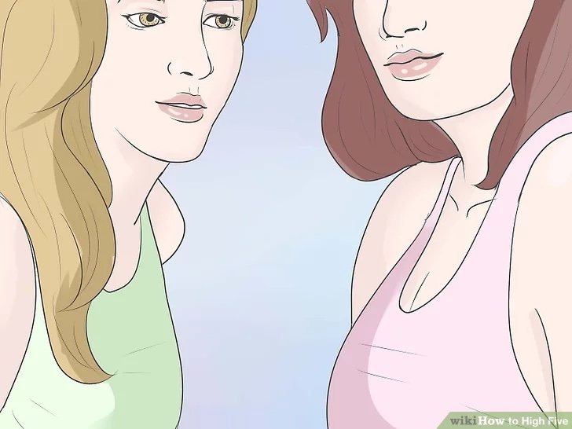
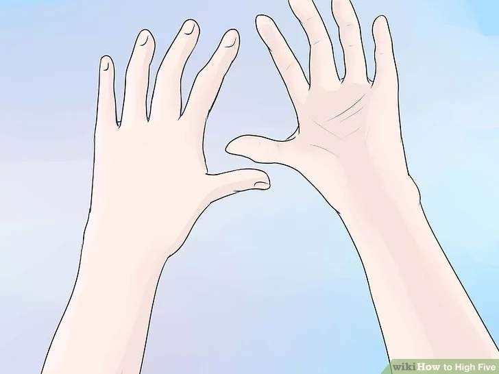
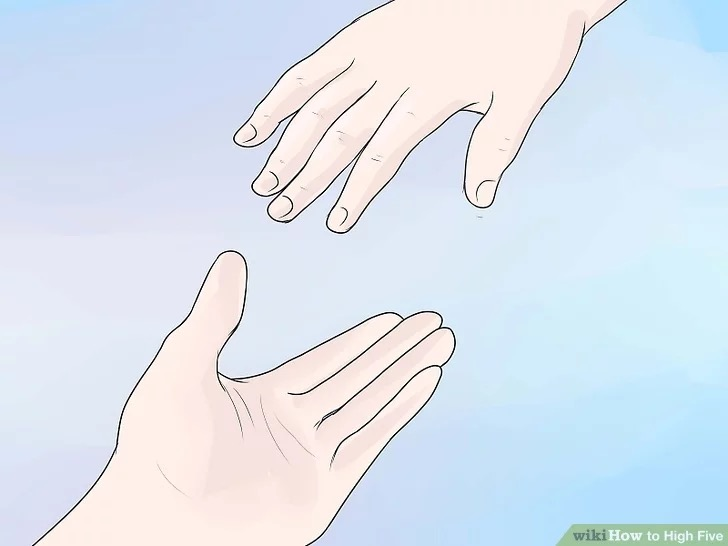
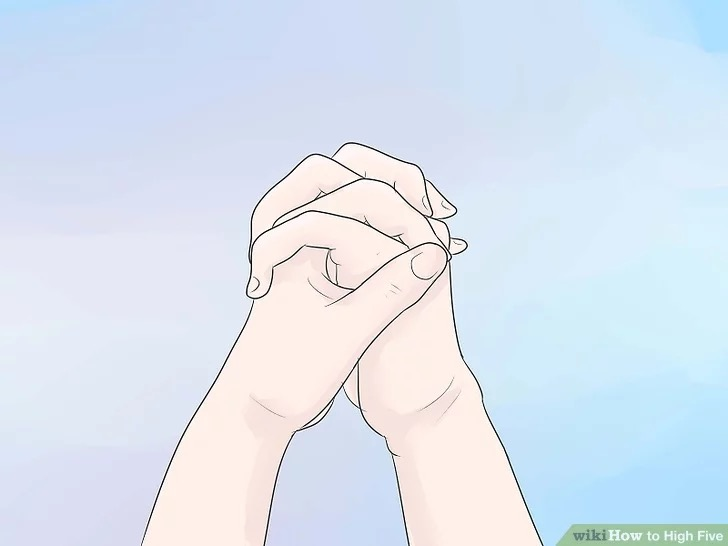
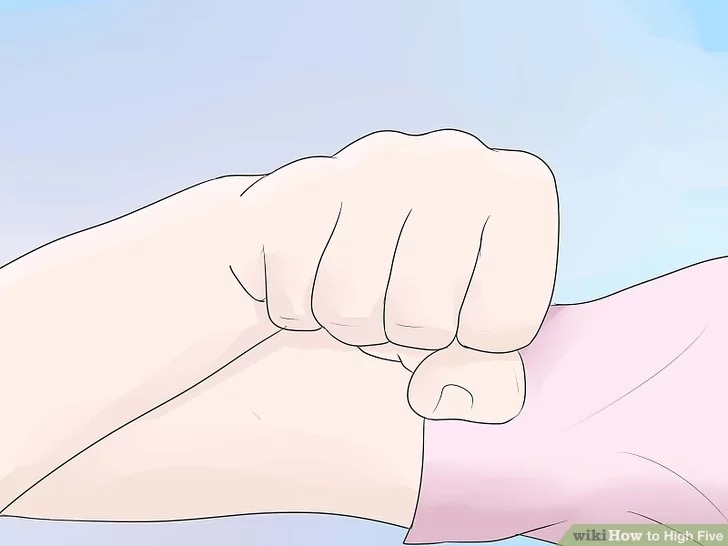

How to High Five
Last Updated: August 24, 2022
What better way to express your joy than by slamming your palm at mach speed into your buddy's? The resulting thunderclap serves not just as a celebration of your own glory but also as a cacophonous warning blast to any would-be competitors within earshot. Start with Step 1 below to learn how to high five like a true champion.
Method 1: Performing a Basic High Five
-

- Grab a partner: You can't do a high five by yourself. This is instead called clapping. To perform a true high five, you'll need someone who's willing to join in your celebration. Ideally, you'll want someone with good upper body strength and strong forearms.
- For the best high fives, you'll also want a great cause for celebration. It's difficult to replicate the spontaneous energy of true celebratory joy in a sterile "practice" environment, so look for opportunities to vanquish foes or do cool skateboard tricks wherever you go.
- Make sure you have a good posture. To put maximum power into your high five, you'll want to have sturdy posture. Plant your feet firmly on the ground about shoulder-width apart, keep your back straight, and roll your shoulders back as you puff up your chest. This strong stance allows you push off the floor, transferring power up through your body and into your wrist for an ear-splitting result.
- Bad posture won't just make your high fives weaker - it'll also make you look worse. If you're slumped over with your gut hanging out as you go in for a high five, your friend will be able to tell that your heart isn't in it and will have ample justification for aborting the high five.
- Smile. High fives are primarily acts of celebration, but they're also cause for celebration in and of themselves. There is absolutely no reason why you shouldn't be smiling as you high five. Being able to high five is a great honor - never take it for granted with a half-hearted smirk.
- The sole exception to this rule is that in the few seconds after your hand makes contact with your partner's, it's acceptable to wince in righteous pain.
- Wind up.Start to move toward your partner. As you take your first few steps, bring your dominant hand back as if you're about to throw a baseball. Your hand should rest in this "cocked" position with its palm open roughly behind your ear.
- You may twist slightly at the waist and/or lean back slightly for added power.
- Swing forward.When you're a few feet from your partner, let loose with all your might. Snap your hand forward at maximum velocity, swinging your shoulder, leaning forward, and twisting slightly. If you hear a loud "crack" before your hand makes contact with your partner's, don't worry - this is your hand breaking the sound barrier. Aim square for the center of your partner's palm - he or she should do the same.
- If you're having trouble hitting your partner's hand, try focusing on his or her elbow as you swing. Seriously, try it - it works wonders.
- Make contact.With luck, your palm should meet your partner's so that both are roughly vertical. The resulting sound should be a quick, sharp "smack" that may reverberate for a moment or two (depending on the acoustics of the room you're in). Revel in the satisfaction of a job well done.
- You'll know you've given a great high five if everyone around you immediately turns to stare with an annoyed expression on their face. Ignore these people - they are known as "haters" and are expressing their annoyance only as a way of masking certain deep-seated insecurities.
- Celebrate with your partner by giving a hearty shout.Congratulations! You have just successfully given your friend the best high five possible. To increase the emotional resonance of your high five, shout out the words "Yeah!", "Yay!", or "Whoo!" with your partner. It's up to you!
Other good choices:- "Hell yeah!"
- "Alright!"
- "Cool!"
- "Radical!"
- "Right on!"
- "Hip!"
- "Woo Hoo!"


Method 2: Learning High Five Variants
-

- Learn "The Classic". Initiate the high five by holding up your hand (palm outward) while facing the other person. Propel your hand forward while saying "High five!", "Gimme five!", "Up here!", or "Hit me!". Proceed to high five as above.
- Keep your eye on the prize! Focus on your partner's hand or elbow to ensure accuracy and prevent either of you from getting smacked in the face.

-
Learn "The Down Low".
Instead of offering your hand to your partner with your palm facing outward, bring it down near your hip and turn your palm up towards the ceiling. Signal that you're ready by saying "down low!" Your partner should then slap your hand with a downward swing of his arm.
- If you're feeling devilish, pull your hand out of the way at the last second. You may or may not want to gloat with a rhyming remark like "too slow!"
- If you liked this method and are looking to expand your repertoire, try coupling this move with its cousin, the aptly named "Up High".
-
Learn "The Air Five".
The Air five (also known as the "Wi-five") is a long distance high five which only requires a line of sight to accomplish. You'll want to follow the classic High five rules without the actual hand contact - in other word, shove your hand, palm facing outward, towards your friend while s/he does the same. Try to make your palms "meet" virtually at the same time. For best results, accompany the move with high five sound effects such as "Whoopish!" or "Kapow!" upon virtual contact.
- This high five variant is perfect for the digital age, as it allows two people to high five over video chat from thousands of miles away.

-
Learn "The Freeze".
Perform a classic high five as normal, but, after the initial smack, maintain hand contact for several seconds before releasing. For best results, you'll want to make eye contact with your partner. Try to use your eyes to convey a sense of longing any other host of barely-suppressed emotions simmering just below your calm exterior!
- For extra fun, slowly let your fingers weave between your partner's until your hands are clasped in a lover's embrace.

-
Learn "The Bro Fist" and its variants
This technique is not technically a High five, but it's a related gesture that's similar enough to bear mention here. In The Bro Fist, each bro forms a closed fist with one hand, lightly taps his fist to his partner's, making knuckle-to-knuckle contact, and finishes with a hearty grunt or shout. This technique has several of its own variations - just a few are listed below:
- The Rocket. Bro 1, after impact, twists his fist and makes a thumbs-up, while Bro 2 mimics the rocket's tail fire by putting his hand under Bro 1's fist and waving his fingers like a trail of fire as he slowly moves his hand toward the floor. Both bros make a whooshing noise to mimic the sound of a rocket.
- The Stick Shift. Upon impact, Bro 2 grabs Bro 1's fist with a frontal grip and yells "stick shift!" Bro 2 then proceeds to mimic the shifting motion of a manual transmission car using Bro 1's fist as a gearshift while making revving noises.
- The Big Bang.Upon Impact, move both fists away from each other slowly as if there was an explosion in the middle. Make low rumbling noises to mimic the sound of an atomic bomb exploding far in the distance.